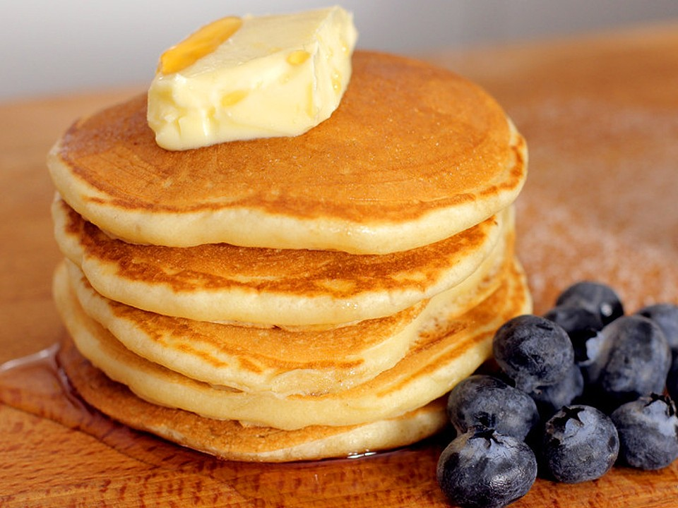

Delicious pancakes

Dish Description:
This is a great recipe, found on a piece of paper during one of my walks
Good old pancakes. Nothing more, nothing less.
Recipe Source
Enjoy!
Ingredients:
- 3 ½ teaspoons baking powder
- 1 teaspoon salt
- 1 tablespoon white sugar
- 1 egg
- 3 tablespoons butter, melted
- 1 cup milk
Steps:
- In a large bowl, sift together the flour, baking powder, salt and sugar. Make a well in the center and pour in the milk, egg and melted butter; mix until smooth.
- Heat a lightly oiled griddle or frying pan over medium-high heat. Pour or scoop the batter onto the griddle, using approximately 1/4 cup for each pancake. Brown on both sides and serve hot.
- The dish is ready to serve. Bon apetit!